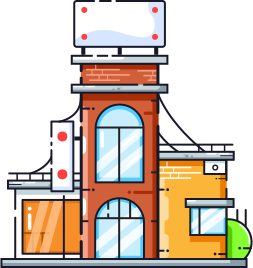

What is the Internet?
The internet is a global network of computers that allows people to share information and access online
resources.
It works by using a system of interconnected networks that allow computers to communicate with each other.
Data is stored on servers that are connected to the internet, and people can access it using a variety of
devices,
including computers, smartphones, and tablets. The data is transmitted over the internet using a variety of
protocols, including the Hypertext Transfer Protocol (HTTP).
What's an IP?
The Internet Protocol (IP) is a set of rules that govern how computers communicate over a network. It
defines
how data is packaged into datagrams (also called packets) and transmitted over the network from one computer
to
another.
Examples of Internet Protocols include the Transmission Control Protocol (TCP), the User Datagram Protocol
(UDP), and the Internet Control Message Protocol (ICMP).
A packet is a unit of data that is transmitted over a network. It contains the data to be transmitted, as
well
as information about the source and destination of the data. packets are routed from one computer to another
based on their IP addresses.
Internet Protocols work by defining a set of rules for how data is packaged and transmitted over a network.
These rules specify things like the size of the datagram, the format of the data, and the order in which the
datagram is sent.
The Future For The Internet
The Internet has already had a profound impact on daily life, and this is only likely to continue in the
next 10 years. By providing instant access to a wealth of information and communication tools, the Internet
has made life easier and more efficient in many ways. In the next 10 years, the Internet is likely to become
even more ingrained in daily life, with even more people using it for work, play, and communication. The
Internet is also likely to become more mobile, with more people accessing it on their smartphones and other
devices. As the Internet becomes more and more ubiquitous, it is likely to have an even greater impact on
daily life.

Reflection
The website is very functional, with a simple navbar and content to look at which is both clear and informative.
By using JavaScript I have made the websites experience more smooth and fluid. From the transition between the
home and behind the scenes page to scroll animations Javascript is important for a great user experience. The
website was also designed in dark mode in order to reduce eye strain and create a more modern and sleek look for
the website. CSS animations are also heavily included with make the website seem more professional and user
friendly. The website is also responsive making it fully functional across all devices.